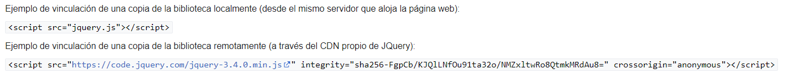
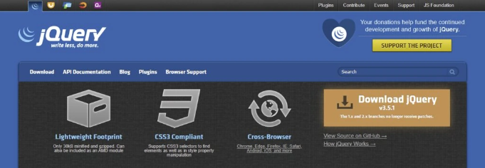

jQuery es una biblioteca de JavaScript rápida, pequeña y rica en funciones. Simplifica enormemente
tareas
como el recorrido y la manipulación
de documentos HTML, la gestión de eventos, la animación y Ajax, gracias a una API fácil de usar que
funciona
en multitud de navegadores.
Con una combinación de versatilidad y extensibilidad, jQuery ha cambiado la forma en que millones de
personas escriben JavaScript.
Los principios de desarrollo con JQuery
- La separación de JavaScript y HTML: La biblioteca jQuery proporciona la sintaxis simple para
añadir
eventos manipuladores a la DOM utilizando JavaScript,
en lugar de añadir eventos atributos HTML para llamar a funciones de JavaScript. Por lo tanto,
alienta a los
desarrolladores a separar completamente el
código JavaScript del marcado HTML.
- Brevedad y claridad: JQuery promueve la brevedad y la claridad con funciones como funciones
"chainable" y
nombres de funciones abreviados.
- Eliminación de incompatibilidades entre navegadores: Los motores de JavaScript de diferentes
navegadores
difieren ligeramente, por lo que el código JavaScript que funciona para un navegador puede no
funcionar para
otro. Al igual que otros kits de herramientas de JavaScript, jQuery maneja todas estas
inconsistencias en
varios navegadores y proporciona una interfaz consistente que funciona en diferentes navegadores.
- Extensibilidad: Los nuevos eventos, elementos y métodos pueden agregarse fácilmente y luego
reutilizarse
como un complemento.
Distribución
La biblioteca JQuery normalmente se distribuye como un único archivo JavaScript que define todas
sus
interfaces, incluidas las funciones DOM,
Eventos y Ajax. Se puede incluir dentro de una página web al vincularlo a una copia local, o al
vincularlo a
una de las muchas copias
en los servidores públicos. JQuery tiene una red de entrega de contenido (conocido popularmente
como
CDN)
alojada por MaxCDN.22
Google en el servicio Google Hosted Libraries y Microsoft también alojan la biblioteca.2324

Ventajas de jQuery
Una de las características principales de la biblioteca jQuery es el manejo de eventos. La creación
de
eventos, como la función de clic del mouse
y el envío de formularios, sólo requiere unas pocas líneas de código. Esto ayuda a mantener el
código HTML
limpio y libre de varios manejadores de eventos.
Modificar los elementos HTML también es más fácil con su función de manipulación del Modelo de
Objetos del
Documento (DOM). La interfaz del navegador web,
muy fácil de usar, te permite añadir, editar y eliminar elementos web utilizando varios métodos de
eventos.El método AJAX, en particular, hace que jQuery
sea ideal para desarrollar un sitio web responsivo utilizando las funciones AJAX. Esta función
mejora la
experiencia del usuario al simplificar las operaciones
de petición HTTP sin recargar la página web.Además, jQuery viene con un montón de efectos de
animación
incorporados. Incluso te permite crear animaciones
personalizadas compuestas por las propiedades CSS que elijas. Además, jQuery es compatible con todos
los
navegadores, por lo que es compatible con los
navegadores más populares. También funciona con selectores CSS3 y con la sintaxis del lenguaje de
rutas XML
(XPath).
Ten en cuenta que añadir scripts jQuery a un sitio web es más fácil a través de una red de
distribución de
contenidos (CDN). De esta manera, no tienes que descargar y almacenar el archivo de la biblioteca en
la
carpeta del sitio.
Desventajas de jQuery
A pesar de ser ligera, la biblioteca de jQuery es enorme. Como la base de código sigue creciendo, se
tarda
más en abrir el archivo JS, lo que supone una
carga adicional para el ordenador del usuario.jQuery también dificulta el aprendizaje y el uso de
JavaScript
debido a su abstracción. Si bien simplifica la
creación de eventos para los principiantes, realizar tareas complicadas como la manipulación del DOM
requerirá un mayor conocimiento de JavaScript para obtener
el resultado deseado.La mayor desventaja es el hecho de que jQuery no permite la
retrocompatibilidad. Como
jQuery tiene muchas versiones publicadas, tienes
que alojar la biblioteca tú mismo y actualizarla periódicamente.

Conclusión
jQuery es una de las bibliotecas de JavaScript más populares del mundo. Ofrece muchas ventajas a los
desarrolladores web, por lo que aprender a utilizarla
debería ser tu prioridad.El uso de la biblioteca jQuery te permite escribir menos código JavaScript
sin
dejar de obtener toda su funcionalidad. Esto te permite
trabajar de forma más eficiente y centrarte en otras partes del proyecto.Esperamos que este tutorial
sobre
jQuery te permita comprender mejor qué es la
biblioteca jQuery y cómo empezar a utilizarla. Si tienes más preguntas, asegúrate de dejar un
comentario a
continuación.